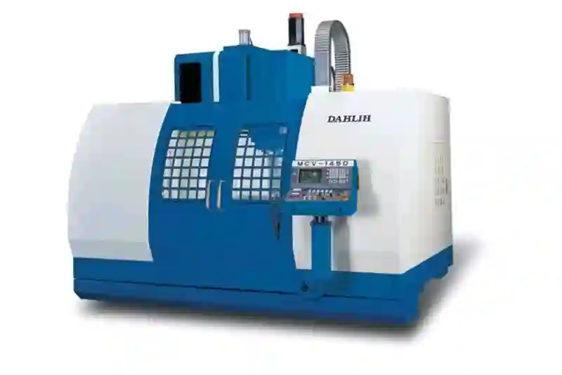
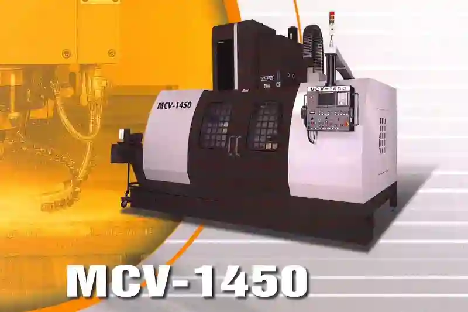

DAHLIH MCV-1450 Dik İşleme MerkeziEndüstriyel Üretimin Güçlü CNC Çözümü
Endüstriyel üretimde hız, hassasiyet ve tekrarlanabilirlik artık her zamankinden daha kritik. Özellikle hidrolik blok, makine gövdesi, özel makine parçaları ve yüksek tolerans gerektiren tüm bileşenlerde işletmeler, artık sadece güçlü değil aynı zamanda uzun yıllar kararlı şekilde çalışabilen CNC tezgâhlara ihtiyaç duyuyor. Bu noktada DAHLIH MCV-1450 dik işleme merkezi, ağır iş yükünü güvenle karşılayabilen yapısı, geniş eksen kapasitesi, güçlü iş mili ve yüksek rijitlik değerleriyle öne çıkan profesyonel bir üretim makinesidir.
İster hidrolik blok imalatı, ister makine gövde imalatı, ister tamamen özel bir proje olsun, DAHLIH MCV-1450 kullanıcılarına sadece bir CNC tezgâh değil; üretim sürecinde yüksek değer oluşturan kapsamlı bir çözüm sunar. Üstelik Ankara gibi sanayi yoğunluğu yüksek bölgelerde, bold olarak kullanılması gereken anahtar kelimelerle ifade edersek: “CNC talaşlı imalat”, “Ankara talaşlı imalat”, “CNC dik işleme merkezi”, “CNC parça üretimi”, “CNC fason işleme” ve “özel makine parça imalatı” alanlarında MCV-1450 en güçlü araçlardan biridir.
DAHLIH MCV-1450 Dik İşleme Merkezinin Temel Teknik Kapasitesi ve Üretimdeki Rolü
MCV-1450 modelini önemli kılan noktalardan biri, geniş işleme hacmi ile yüksek rijitliği bir araya getirmesidir. X ekseninde 1450 mm, Y ekseninde 750 mm ve Z ekseninde 750 mm strok kapasitesi sunan bu model, hem büyük parçalar hem de çok yüzeyli işlem gerektiren projeler için uygundur. Özellikle hidrolik manifold üretimi gibi karmaşık iç yapıların bulunduğu parçalar için geniş alan ve güçlü iş mili büyük avantaj sağlar.
MCV-1450’in dikey gövde yapısı ve döküm konstrüksiyonu titreşimi minimuma indirirken, ağır talaş kaldırma operasyonlarında dahi stabil performans vermesine olanak tanır. Bu altyapı, özellikle “hidrolik güç ünitesi blok işlem”, “hidrolik gövde üretimi” ve “valf bloğu cnc işleme” gibi detaylı operasyonlara sahip üretimlerde fark yaratan bir etmendir.
Bu tezgâh, sadece seri üretime değil aynı zamanda proje bazlı imalata da uygun olduğundan manifold cnc işleme süreçlerinde hızlı, ölçüsel olarak tutarlı ve maliyet açısından verimli sonuçlar sağlar. Benzer şekilde “makine parçası cnc”, “çelik plaka işleme”, “şase bağlantı parçası üretimi” gibi mekanik işlerin tümünde yüksek hassasiyet elde edilir.


DAHLIH MCV-1450 CNC Teknik Özellikleri
- Maksimum Tabla Yükü : 2000 kg
- Tabla Yüzey Konfigürasyonu : 5x22x150 mm
- Tabla İş Mili Mesafesi : 200-950 mm
- X Ekseni Hareketi : 1450 mm
- Y Ekseni Hareketi : 750 mm
- Z Ekseni Hareketi : 750 mm
- Eksen Yapısı : Kutu Kızak
- X, Y, Z Eksenleri Seri Hareket Hızları : 20/20/12 m/dak
- X, Y, Z Eksenleri Kesme Hızları : 10/10/10m/dak
- X, Y, Z Eksenleri Motor Güçleri : 3.8-3.8-3kW
- İş Mili Devri : 6.000 rpm
- İş Mili Motor Gücü : 15/11 kW
- Takım Sayısı : 32
- Takım Tutucu Normu : BT50
- Takım Seçme Şekli : ATC
- Max. Takım Çapı ve Uzunluğu : 110×350 mm
- Max. Takım Ağırlığı : 15 kg
- Takım Değiştirme Süresi (T-T/C-C) : 3,5 sn
- Gerekli Hava İhtiyacı : 6 bar
- Gerekli Yerleşim Alanı : 3900 x 3531 x 3805 mm
- Ağırlık : 14500 kg
- Kontrol Ünitesi : FANUC/MITSUBISHI/SIEMENS

MCV-1450’in Hidrolik Blok ve Manifold Üretiminde Sağladığı Avantajlar
Hidrolik bloklar, çok sayıda delik, cep, kanal ve bağlantı yüzeyine sahip kompleks yapılardır. Bu nedenle hidrolik bileşenlerde üretim kalitesini belirleyen temel kriterler; hassasiyet, yüzey kalitesi, delik işleme kararlılığı ve tolerans kontrolüdür. DAHLIH MCV-1450 tüm bu gereksinimleri karşılayacak şekilde tasarlanmıştır.
Ayrıca yüksek torklu iş mili sayesinde hem çelik hem de alaşım malzemelerde işleme kararlılığı en üst seviyededir. Bu da hidrolik blok fiyatı belirlenirken hem işçilik süresini düşürür hem de kalite kontrol aşamalarını kolaylaştırır. Üretim süreci daha hızlı tamamlandığı için işletmeler kâr oranlarını artırabilir.
Hidrolik Bloklarda Delik İşleme ve Kanal Açma Performansı
Hidrolik bloklarda delik yoğunluğu yüksek olduğundan, eksen kararlılığı ve iş mili rijitliği kritik önem taşır. MCV-1450, bu tür işlemlerde:
- Düşük titreşim,
- Kararlı matkap ilerleme hızları,
- Düzgün talaş kırma,
- Derin delik işleme kabiliyeti
gibi avantajlarıyla öne çıkar. Özellikle 4140, St52 veya alüminyum alaşımları gibi hidrolik bloklarda sık kullanılan materyallerde yüzey kalitesini iyileştirir.
Bu nedenle DAHLIH MCV-1450, sektör profesyonelleri tarafından sıkça tercih edilen bir modeldir.
Projeni Başlat
DAHLIH MCV-1450 Dik İşleme Merkezi ile Aymaksan Makine Hangi Parçaları İşleyebilir?
Bu ölçü ve kapasitede bir dikey işleme merkezi ile aşağıdaki tipte parçaları rahatlıkla işleyebilirsin:
- Makine gövdesi ve şase parçaları
- Çelik veya dökümden makine kolonları, yataklama blokları, kızak altlıkları, flanşlı gövdeler.
- Plaka ve levha tipi parçalar
- Çelik, dökme demir veya alüminyumdan taban plakaları, bağlantı plakaları, montaj plakaları, dişli kutusu kapakları vb.
- Flanş ve bağlantı elemanları
- Büyük çaplı flanşlar, adaptörler, makine bağlantı ayakları, motor/şanzıman bağlantı flanşları.
- Blok parçalar (manifold / gövde)
- Hidrolik ve pnömatik manifoldlar, vana gövdeleri, pompa gövdeleri, redüktör gövdeleri, dişli kutusu kasaları.
- Kalıp tabanları ve kalıp elemanları
- Plastik enjeksiyon / dövme / döküm kalıplarına ait tabanlar, ara plakalar, yolluk / soğutma kanalı cepleri vb.
- Fikstür ve aparat gövdeleri
- Seri imalat için kullanılan bağlama aparatları, kaynak fikstürleri, ölçüm fikstürleri.
- İş ve tarım makineleri parçaları
- Şase bağlantıları, bom/kol bağlantı blokları, mafsal bağlantı parçaları.
- Genel mekanik parçalar
- Yatak yuvaları, dişli kutusu yatak gövdeleri, motor adaptörleri, kızak blokları, büyük boy mafsal ve bağlantı blokları.
Özetle: orta-büyük sınıf, prizmatik (blok / plaka / gövde) tip tüm parçalar bu tezgâhta işlenebilir.
MCV-1450 ile Hangi malzemeleri işleyebiliriz?
Makine yapısı ve BT50 konik spindle nedeniyle aşağıdaki malzemeler tipik:
- Yapısal çelikler (St37, St52 vb.)
- Dökme demir (GG25, GGG40 vb.)
- Takım çelikleri (ısıl işlem öncesi/sonrası uygun kesme ile)
- Paslanmaz çelikler (304, 316, 420 vb.)
- Alüminyum ve alaşımları (5083, 7075 vb.)
- Pirinç, bronz vb. bakır alaşımları
Doğru takım seçimi ve kesme parametreleri ile hem ağır talaş hem de finisaj yüzeyleri elde edilebilir.
MCV-1450 ile Makine Gövdesi İmalatında Hassasiyet ve Yüksek Dayanım
Makine gövdesi ve şase elemanları, üretim hatlarında ve endüstriyel uygulamalarda mekanik dayanımı belirleyen en önemli bileşenlerdir. Bu tür parçalar, genellikle yüksek rijitlik isteyen ağır yük altında çalışma koşullarına sahiptir. DAHLIH MCV-1450 dik işleme merkezi, sağlam döküm gövde yapısı ve güçlü iş mili sayesinde, bu tarz büyük ve karmaşık parçaların işlenmesi için ideal bir altyapı sunar.
MCV-1450’nin geniş tabla yapısı, uzun strokları ve güçlü tutucu sistemleri sayesinde 2 ton ağırlığa kadar makine gövdeleri güvenle işlenebilir. Bu, özellikle “makine gövde imalatı”, “çelik plaka işleme” ve yüksek dayanım gerektiren “şase bağlantı parçası üretimi” için büyük avantaj sağlar. Parçanın boyutundan bağımsız olarak işleme yüzeylerinde tekrarlanabilirlik sağlanır.
Makine gövdelerinde sıklıkla karşılaşılan zorluklardan biri, hem kaba talaş kaldırma hem de hassas yüzey işleme gereksiniminin aynı tezgâh üzerinde yapılabilmesidir. MCV-1450 bu konuda güçlü performans gösterir. Yüksek tork gerektiren işlemlerde bile yüzeyde titreşim oluşmadığı için hem hassasiyet korunur hem de işleme süresi kısalır. Bu durum, işletmelere maliyet avantajı sağlar.
Özel Makine Parçaları ve Prototip Üretiminde MCV-1450’nin Rolü
Günümüz imalat sektöründe özel projeler ve düşük adetli parçalar her geçen gün daha fazla ihtiyaç haline geliyor. Müşterilerin proje gereksinimlerine göre şekillenen bu parçalar, çoğu zaman standart üretim süreçlerine uygun değildir. Bu nedenle esnek, güçlü ve çok yönlü CNC çözümleri gereklidir.
DAHLIH MCV-1450, farklı geometri ve boyutlara sahip parçaların üretiminde yüksek hassasiyet sağlayan bir işleme merkezidir. Özellikle “CNC parça üretimi”, “özel makine parça imalatı” ve proje bazlı “CNC fason işleme” hizmetlerinde kullanılan parçalarda başarıyla uygulanır. Müşterilerin CAD çizimlerine göre şekillenen özel parçalar, MCV-1450 ile kısa sürede üretilebilir.
Özel makine parçaları arasında bağlantı blokları, ara plakalar, makine yataklama elemanları, dişli yuvaları, ayar bileşenleri, takma flanşlar ve hassas ölçülü bağlantı yüzeyleri bulunur. Bu parçalar genellikle maliyeti yüksek işlerdir çünkü karmaşık toleranslar ve özellikler içerirler. MCV-1450, yüzey işleme performansı ve eksen kararlılığı ile bu tür projelerde hatasız üretim sağlar.
Prototip Üretiminde Hız, Hassasiyet ve Tekrarlanabilirlik
Prototip üretimi, bir parçanın gerçek üretime geçmeden önce test edilmesi ve gerekli revizyonların yapılabilmesi açısından çok önemlidir. DAHLIH MCV-1450, prototip projelerde gereken:
- Yüksek yüzey kalitesi
- Hassas toleranslar
- Hızlı teslim süresi
- Tekrarlanabilir ölçüler
- Çok yüzlü işleme opsiyonu
gibi tüm gereksinimleri karşılar.
Prototip parçalarının büyük çoğunluğu, “makine parçası cnc” üretim süreçleriyle oluşturulur. Bu işlemlerde hem kaba hem de ince işleme adımları aynı tezgâhta yapılabildiği için zaman kaybı olmaz. Böylece müşterilere hızlı geri dönüş yapılır ve tasarım aşamaları hızlanır.
MCV-1450 ile Plaka İşleme ve Mekanik Aksam Üretimi
Çelik, alüminyum ve dökme demir plakalar birçok endüstride kullanılır. DAHLIH MCV-1450, geniş tabla yapısı ve güçlü iş mili sayesinde bu materyaller üzerinde yüksek talaş kaldırma kapasitesi sunar. Özellikle “çelik plaka işleme” çalışmalarında verimlilik sağlar.
MCV-1450 ile plaka işleme süreçlerinde:
- Cep açma
- Kanal işleme
- Et kalınlığı düşürme
- Step yüzey oluşturma
- Montaj delikleri açma
- Radius ve pah oluşturma
gibi operasyonlar hatasız şekilde uygulanabilir.
MCV-1450, ağır iş yüklerinde bile deformasyon oluşmasını engelleyen rijit yapısı sayesinde yüksek dayanımlı makine parçalarının üretiminde önemli bir rol oynar.
Şase ve Mekanik Bağlantı Parçalarının Üretim Süreci
Şase ve bağlantı elemanları, özellikle büyük makine parkurlarında dayanımı belirleyen kritik bileşenlerdir. Bu parçaların üretiminde hem tolerans hem de yüzey kalitesi oldukça önemlidir. MCV-1450, bu tür üretimlerde hem kaba işleme hem de hassas finisaj operasyonlarını başarıyla gerçekleştirir.
Bu bağlamda öne çıkan anahtar kelimeler olan “makine gövde imalatı”, “şase bağlantı parçası üretimi” ve “makine parçası cnc” işlemleri MCV-1450 ile yüksek doğruluk ve hızda yapılabilir.
Şase bağlantı parçaları özellikle:
- Yük taşıyan bölgelerde
- Sarsıntı ve titreşim altında çalışan makinelerde
- Hidrolik ve pnömatik sistemlerde
- Endüstriyel robotik hatlarda
aktif görev alır.
Bu nedenle yüzey kalitesi, delik eksenlerinin doğruluğu ve bağlama yüzeylerinin paralelliği son derece kritiktir. DAHLIH MCV-1450 bu gereksinimleri fazlasıyla karşılar.
Ankara ve Türkiye Genelinde CNC Üretim Taleplerine Profesyonel Yanıt
Ankara, Türkiye’nin en büyük endüstriyel üretim merkezlerinden biridir. Yaygın olarak hidrolik sistemler, makine imalatı, savunma sanayisi ve otomasyon sektörlerinde birçok işletme aktif olarak üretim yapmaktadır. Bu işletmelerin büyük çoğunluğu proje bazlı parça üretimi hizmetlerine ihtiyaç duyar.
Bu noktada DAHLIH MCV-1450, Ankara’da bold kullanılması gereken anahtar kelimelerle ifade edersek: “Ankara talaşlı imalat”, “CNC talaşlı imalat”, “CNC dik işleme merkezi”, “CNC parça üretimi” ve “CNC fason işleme” hizmetlerinde öne çıkan tezgâhlardan biridir.
Türkiye genelinde hidrolik blok, makine gövdesi ve özel parçaların üretimi sürekli artan bir ihtiyaçtır. İşletmeler, üretim kalitesini artırmak ve teslim sürelerini düşürmek için MCV-1450 gibi yüksek performanslı CNC tezgâhlara yönelmektedir.
Teklif İsteyin
MCV-1450 ile Hidrolik Blok Üretiminde Üstün İşleme Performansı
Hidrolik bloklar, içlerinde çok sayıda delik, cep, geçiş kanalı ve bağlantı yüzeyi barındıran kompleks mekanik bileşenlerdir. Bu nedenle CNC tezgâhlarında hem yüksek hassasiyet hem de güçlü talaş kaldırma kapasitesi gerektirir. DAHLIH MCV-1450 dik işleme merkezi, özellikle yüksek rijitlik isteyen hidrolik blok yapıları için güçlü bir çözüm sunar.
Hidrolik blok işleme projelerinde kullanılan anahtar kavramlardan olan “hidrolik blok imalatı”, “hidrolik manifold üretimi”, “hidrolik gövde üretimi”, “manifold cnc işleme”, “valf bloğu cnc işleme” ve “hidrolik güç ünitesi blok işlem” MCV-1450’nin üstün eksen stabilitesi ve iş mili gücü sayesinde yüksek verimlilikle gerçekleştirilebilir.
Hidrolik blokların genel işleme karakteristiği, her yüzeyde farklı tolerans gereksinimleri ve farklı tipte operasyonların bir arada bulunmasıdır. Bu nedenle tezgâhın kararlılığı ve bağlama yöntemleri hayati önem taşır. MCV-1450, bu süreçlerde tekrarlanabilir sonuçlar sunar ve yüksek parça kalitesi elde edilmesini sağlar.
Hidrolik Blokların Kritik Noktalarında İşleme Stratejileri
Hidrolik blokların yapısında bulunan delikler ve kanallar, hidrolik akışın doğru şekilde yönlendirilmesi açısından kritik öneme sahiptir. Bu nedenle delik merkezlerinin doğruluğu, delik eksenlerinin paralelliği ve yüzey pürüzlülüğü kaliteli bir üretimin temel unsurlarıdır.
MCV-1450 ile hidrolik blok üretiminde yaygın olarak uygulanan işleme stratejileri:
1. Derin Delik İşleme
- Kararlı iş mili yapısı sayesinde titreşim minimumdur.
- Karbür matkaplar ile derin deliklerde yüksek ilerleme sağlanabilir.
- Talaş tahliyesi etkili olduğu için kanal deformasyonu azalır.
2. Cep ve Kanal İşleme
- Dynamic milling (Trochoidal) stratejisi kullanılarak hem takım ömrü artırılır hem de talaş kaldırma verimi yükselir.
- Geometrik karmaşıklığı yüksek cepler bile hassas şekilde açılabilir.
3. Rayba ve Kılavuz Operasyonları
- H7 toleransında delik gereksinimleri için rayba operasyonları yüksek doğruluk sağlar.
- Kör deliklerde spiral kılavuz, geçişli deliklerde düz kılavuz tercih edilir.
Bu stratejiler, hidrolik blokların uzun ömürlü ve hatasız çalışmasını sağlar.
Manifold ve Valf Bloklarında Yüksek Hassasiyet Gerektiren Operasyonlar
Manifold blokları, hidrolik ve pnömatik sistemlerde akışın dağıtılmasını sağlayan kritik mekanik elemanlardır. Bu bloklarda genellikle karmaşık iç kanallar ve çoklu bağlantı noktaları bulunur. DAHLIH MCV-1450, bu tarz yapılarda gereken yüksek hassasiyeti sağlayan güçlü bir tezgâhtır.
MCV-1450’nin manifold bloklarındaki avantajları:
1. Yüzey Düzlüğü
Montaj yüzeylerinde sızdırmazlığı doğrudan etkilediğinden yüzey kalitesi kritik önem taşır. MCV-1450, kararlı iş mili yapısı sayesinde iyi bir yüzey pürüzlülüğü sunar.
2. Delik Merkezleme Doğruluğu
Bir manifold bloğunda delik merkezlerinin doğru eşleşmesi, sistemin verimli çalışması için gereklidir. Bu doğruluk, MCV-1450’nin yüksek pozisyon tekrar hassasiyeti ile sağlanır.
3. Ölçüsel Tutarlılık
Üretim adetleri arttığında ölçüsel tutarlılığın aynı seviyede devam etmesi, profesyonel işletmeler için büyük avantajdır. MCV-1450 bu başarıyı uzun süre korur.
Hidrolik Blok Fiyatlandırmasını Etkileyen İşleme Faktörleri
Hidrolik blok üretiminde maliyet hesaplama sadece malzeme fiyatından ibaret değildir. İşleme süresi, kullanılan takım türü, tolerans seviyesi, delik sayısı ve yüzey pürüzlülüğü gibi birçok faktör toplam maliyet üzerinde etkili olur.
Fiyatlandırma üzerinde etkili olan başlıklar:
- Delik ve kanal sayısı
- Malzeme türü (St52, 4140, 7075 vb.)
- İşleme toleransı
- Teslim süresi
- Montaj yüzeylerinin hassasiyeti
- Ek operasyonlar (pah, radius, taşlama talebi vb.)
Bu nedenle sektörde aranan ve anahtar kelime olarak kullanılan “hidrolik blok fiyatı” ifadesi, üreticiden üreticiye göre farklılık gösterebilir.
MCV-1450 kullanıldığında işleme süresi kısalır, hata riski düşer ve kalite artar. Bu da işletmelere rekabetçi fiyat avantajı sağlar.
MCV-1450 ile CNC Kalite Yönetimi ve Ölçü Doğrulama Süreçleri
CNC üretimde doğruluk sadece işleme sırasında değil, işleme sonrasında uygulanan kalite kontrol süreçlerinde de önemlidir. DAHLIH MCV-1450, yüksek hassasiyetli eksen kontrolü sayesinde kalite yönetiminde büyük avantaj sağlar.
Aşağıdaki kalite kontrol aşamaları genellikle MCV-1450 ile işlenen parçalar için uygulanır:
1. 3D Prob ile Referans Alma
Tezgâh üzerindeki prob yardımıyla parça yüzeylerinden otomatik referans alınır.
2. Ölçü Kontrolü
Kumpas, mikrometre, iç çap ölçer ve CMM cihazları ile ölçüler doğrulanır.
3. Paralellik ve Düzlemsellik Kontrolü
Montaj yüzeylerinde düzlemsellik kritik önemdedir. MCV-1450 bu konuda yüksek başarı sağlar.
4. Tolerans Analizi
Parçanın CAD modeli ile karşılaştırma yapılarak ölçüsel uyumsuzluklar tespit edilir.
Bu süreçlerin tamamı, özellikle “CNC talaşlı imalat”, “CNC parça üretimi” ve proje bazlı “CNC fason işleme” hizmetlerinin kalitesini artırır.
MCV-1450’nin Endüstriyel Kullanım Alanları ve Sektörel Uygulamalar
DAHLIH MCV-1450, yalnızca bir dik işleme tezgâhı değildir; aynı zamanda çok geniş bir endüstriyel yelpazede kullanılan üretim çözümlerinin merkezindedir. Bu makine, farklı sektörlerde aşağıdaki uygulamalarda tercih edilir:
Makine İmalatı
Şase, gövde, bağlantı plakaları ve mekanik parçalar gibi dayanım gerektiren bileşenlerde MCV-1450 yüksek performans gösterir.
Hidrolik ve Pnömatik Sistemler
Hidrolik bloklar, manifoldlar ve valf gövdeleri bu tezgâh için en ideal uygulama alanlarından biridir.
Otomasyon Sistemleri
Robotik hatlarda kullanılan bağlantı bileşenleri, makine altlıkları ve aparat parçaları yüksek hassasiyet gerektirir.
Savunma Sanayisi
Kritik mekanik bileşenlerde yüksek toleransların karşılanabilmesi bu sektörde büyük avantaj sağlar.
Bu nedenle MCV-1450 hem seri üretim hem de proje bazlı üretim yapan işletmeler için stratejik bir yatırımdır.
İletişime Geçin
Ağır Talaş Kaldırma Kapasitesi ve MCV-1450’nin Endüstriyel Dayanımı
DAHLIH MCV-1450, özellikle çelik, döküm, alaşım çelikleri, alüminyum ve paslanmaz çelik gibi geniş bir malzeme yelpazesini yüksek verimle işleyebilen profesyonel bir CNC dik işleme tezgâhıdır. Bu makine, döküm gövdesi ve üç eksende sağladığı rijitlik sayesinde ağır talaş kaldırma operasyonlarında dahi stabilitesini korur.
Bu durum, özellikle “çelik plaka işleme”, “makine parçası cnc”, “makine gövde imalatı”, “hidrolik gövde üretimi” gibi yüksek güç gerektiren uygulamalarda büyük avantaj sağlar. Ağır talaş kaldırma işlemleri sadece kaba işlemede değil, çok yüzeyli iş parçası hazırlığında da kritik rol oynar.
Ağır talaş kaldırma kapasitesinin işletmelere sağladığı avantajlar:
- İşleme süresinin ciddi şekilde azalması
- Takım ömrünün uzaması
- Yüzey kalitesinin proses sonunda daha iyi olması
- Operasyon sayısının azalması
- Maliyetlerin düşmesi
- Teslim sürelerinin kısalması
Bu özellikler sayesinde MCV-1450 yalnızca bir CNC tezgâh değil, işletmenin üretim verimliliğini doğrudan artıran bir “performans merkezi” olarak değerlendirilir.
MCV-1450 ile Yüksek Verimlilik ve Üretim Süreçlerinin Optimizasyonu
Bir CNC tezgâhından beklenen en önemli unsurlar; hız, hassasiyet, güvenilirlik ve sürekliliktir. DAHLIH MCV-1450 bu beklentileri fazlasıyla karşılayan bir tezgâh modelidir. Özellikle “CNC talaşlı imalat”, “CNC dik işleme merkezi”, “CNC fason işleme” gibi hizmet sunan işletmelerde MCV-1450’nin verimlilik katkısı son derece belirgindir.
Verimliliği artıran temel faktörler aşağıda yer almaktadır.
Yüksek Hızda Kararlı İşleme
MCV-1450’nin güçlü iş mili yapısı, işlem sırasında titreşim oluşmasını önleyerek yüzey kalitesini iyileştirir. Bu sayede hem kaba hem de finisaj operasyonlarında daha yüksek hassasiyet elde edilir.
Hızlı Takım Değiştirme
ATC (Auto Tool Changer) sistemi sayesinde takım değişim süreleri minimuma iner. Özellikle delik yoğunluğu fazla olan hidrolik bloklarda bu durum büyük zaman kazandırır.
Gelişmiş Soğutma Sistemi
Yüksek basınçlı soğutma seçenekleri sayesinde derin deliklerde bile ısınma problemi yaşanmaz. Bu, “valf bloğu cnc işleme” gibi operasyonlarda yüksek delik kalitesi sağlar.
CAM Dostu Yapı
MCV-1450, CAM programlarında kullanılan “dynamic milling”, “high-feed” ve “adaptive clearing” gibi stratejilere son derece uyumludur.
Bu uyumluluk sayesinde:
- İşleme süresi azalır
- Takım yükü düşer
- Talaş tahliyesi iyileşir
- Yüzey kalitesi artar
MCV-1450’nin İşletme Maliyetlerine Katkısı
Bir CNC tezgâhının gerçek değeri sahip olduğu yüksek teknoloji kadar, işletmeye sağladığı maliyet avantajlarıyla da ölçülür. DAHLIH MCV-1450, sahip olduğu rijit yapı, enerji tasarruflu motor sistemi ve minimum bakım gereksinimi ile işletme giderlerini önemli ölçüde düşürür.
İşletme maliyetlerine katkı sağlayan unsurlar:
- Azalan takım kırılması: Yüksek rijitlik sayesinde takım kırılma riski düşer. Bu, özellikle pahalı karbür takımlarda maliyeti azaltır.
- Stabil proses: Her parçada aynı işlem kalitesinin elde edilmesi hurda riskini ortadan kaldırır.
- Enerji verimliliği: Yeni nesil sürücüler enerji tüketimini dengeler.
- Azalan işçilik süresi: Otomatik proseslerin artması, manuel müdahaleyi azaltır.
Bu bileşenler, işletmenin üretim birim maliyetlerini önemli ölçüde düşürür. Bu durum, “hidrolik blok fiyatı”, “manifold cnc işleme”, “hidrolik güç ünitesi blok işlem” gibi fiyatlandırma gerektiren işlerde rekabet gücünü artırır.
Bakım Kolaylığı ve Uzun Ömürlü Kullanım Avantajları
MCV-1450, uzun süreli ve ağır iş koşullarında bile performansını koruyacak şekilde üretilmiştir. Bakım süreçleri kolaydır ve minimum duruş süresi oluşturur.
Bakım avantajları:
- Kolay erişilebilir yağlama noktaları
- Otomatik yağlama sistemi
- Toz ve talaş korunmasına uygun gövde yapısı
- Geniş bakım kapakları
- Elektrik panosunda düzenli düzen
Bu avantajlar, tezgâhın kesinlikle “sürekli çalışma” gerektiren sektörlerde tercih edilmesini sağlar. Özellikle “makine gövde imalatı”, “hidrolik blok imalatı”, “hidrolik manifold üretimi” gibi yoğun çalışan üretim hatlarında MCV-1450 kesintisiz iş akışı sağlar.
DAHLIH MCV-1450 ile Üretimde Dijitalleşme ve Endüstri 4.0 Uyumlu Çözümler
MCV-1450’nin modern kontrol ünitesi yapısı, işletmelerin dijital üretim süreçlerine uyum sağlamasına katkıda bulunur. Endüstri 4.0’ın olmazsa olmazlarından biri olan veri izlenebilirliği, bu tezgâh ile kolayca sağlanır.
Dijitalleşmenin sağladığı katkılar:
- Üretim sürelerinin kayıt altına alınması
- Bağlantı noktası sıcaklık ve titreşim izleme
- İş mili yük grafikleri
- Verimlilik raporları
- Takım ömrü analizleri
Bu özellikler, özellikle yüksek toleranslı üretim yapan profesyonel işletmeler için stratejik avantaj sağlar.
İletişime Geçin
DAHLIH MCV-1450 ile Üretimde Elde Edilen 360° Avantajlar
Üretimde verimlilik ve hassasiyet arayan işletmeler için DAHLIH MCV-1450, sadece güçlü bir CNC tezgâh değil; aynı zamanda üretim süreçlerini bütünleyici bir mühendislik çözümüdür. MCV-1450, hem ağır talaş kaldırma kapasitesi hem de çok yüzeyli işleme kabiliyeti sayesinde birçok sektörde kritik rol üstlenir.
Bu makinenin endüstriyel kullanımda sunduğu temel avantajlar:
- Yüksek Eksensel Kararlılık: Hidrolik bloklar, valf gövdeleri ve makine parçalarında eksen doğruluğu kritik önemdedir. MCV-1450 bu doğruluğu uzun süre korur.
- Geniş İşleme Hacmi: 1450 × 750 × 750 mm çalışma alanı, büyük parçaların bile tek bağlamada işlenmesine olanak sağlar. Bu, özellikle “hidrolik gövde üretimi”, “makine gövde imalatı”, “çelik plaka işleme” gibi büyük ölçekli işlerde hızlı ve verimli üretim demektir.
- Proje Bazlı Üretime Uygunluk: “CNC fason işleme”, “özel makine parça imalatı”, “makine parçası cnc”, “CNC parça üretimi” gerektiren tüm projelerde esnek yaklaşım sunar.
- Düşük Hurda Oranı: Titreşim azaltıcı gövde yapısı sayesinde hata oranı düşer, hurda maliyeti minimize edilir.
- Daha Kısa Teslim Süreleri: Hızlı takım değişimi, yüksek ilerleme kapasitesi ve CAM uyumlu geometrisi sayesinde işleme süreleri azalır. Bu, işletmelere rekabet avantajı sağlar.
DAHLIH MCV-1450 Satın Alma Öncesi Değerlendirme Rehberi
Bir CNC dik işleme merkezi yatırımı yapılırken dikkat edilmesi gereken çok sayıda teknik kriter vardır. MCV-1450, birçok profesyonel işletme tarafından tercih edilmesinin nedenlerini yapısında barındırır. Satın alma öncesi şu kriterleri göz önünde bulundurmak doğru olur:
Üretim Türü ve Parça Çeşitliliği
İşletme, sıkça hidrolik blok imalatı, hidrolik manifold üretimi, manifold cnc işleme, valf bloğu cnc işleme gibi işlemler yapıyorsa MCV-1450 en doğru tercihlerden biridir. Ağır talaş kaldırma gerektiren işleri kararlı şekilde yapar.
Malzeme Türleri
MCV-1450; St52, C45, 4140, 2738, GG25, GGG40, alüminyum alaşımlar ve paslanmaz çeliklerde yüksek işleme performansı sunar.
İş Gücü ve Operatör Deneyimi
Operatörün tezgâha kolay adapte olabilmesi, iş süreçlerini kısaltır. MCV-1450’nin kullanımı, Fanuc – Mitsubishi – Siemens kontrol üniteleriyle uyumlu olduğu için kolaydır.
İşleme Hassasiyeti Gereksinimleri
Yüksek toleranslı işlerde (±0.01 mm seviyesinde), MCV-1450’nin rijit gövdesi ve eksen doğruluğu güven sağlar.
Bakım & Servis Kolaylığı
Düzenli bakım isteyen CNC tezgâhlar işletmede duruş sürelerini artırır.
MCV-1450’de ise:
- Otomatik yağlama
- Kolay parça erişimi
- Koruma saclarının ağır yüke dayanıklı olması
gibi özelliklerle bakım süreci oldukça kolaydır.
DAHLIH MCV-1450 ile Hidrolik, Makine ve Savunma Sanayisi Üretiminde Yüksek Performans
MCV-1450, farklı sektörlerde kritik üretim operasyonlarına hizmet eden bir CNC çözümüdür. Bu tezgâhın kullanım alanları üretim mühendisleri tarafından şu şekilde listelenir:
- Makine İmalatı: Makine gövdesi, bağlantı plakaları, şase parçaları, mekanik bloklar.
- Hidrolik Sistemler: Hidrolik bloklar, manifoldlar, valf gövdeleri ve hat bağlantı elemanları.
- Savunma Sanayisi: Hassas mekanik bileşenler, makine alt elemanları, bağlantı parçaları.
- Otomotiv Yan Sanayi: Motor yataklamaları, ara plakalar, bağlantı destekleri.
- Otomasyon – Robotik Sistemler: Robot kolları, fikstür parçaları, bağlantı blokları.
Bu alanların tamamında MCV-1450 üstün bir üretim gücü sunar.
DAHLIH MCV-1450’nin Üretimde Sağladığı Değerin Özet Analizi
Aşağıdaki maddeler, bu tezgâhın işletmelere sağladığı temel faydaları özetler:
- Daha yüksek üretim hacmi
- Daha düşük birim maliyetler
- Daha kısa üretim süresi
- Daha kararlı kalite kontrol sonuçları
- Daha düşük takım maliyetleri
- Daha az operatör müdahalesi
- Daha az ıskarta ve hurda parça
Bu faydaların tamamı, işletmenin rekabet gücünü doğrudan artıran etkilerdir. Özellikle “Ankara talaşlı imalat”, “CNC talaşlı imalat”, “CNC dik işleme merkezi”, “CNC parça üretimi”, “CNC fason işleme”, “CNC Tornalama”, “CNC Frezeleme ve Dik İşleme”, “Özel Talaşlı İmalat”, “Kaynak ve Montaj Hizmetleri”, “Prototip Üretim ve Ar-Ge Desteği”, “Kalite Kontrol ve Ölçüm Hizmetleri”, gibi hizmetlerde bu avantajlar önemli bir edinim oluşturur.
SONUÇ: MCV-1450 ile Profesyonel Üretim Gücü ve Sektörel Rekabet Avantajı
DAHLIH MCV-1450, hem büyük parçaları hem de karmaşık tolerans gerektiren mekanik bileşenleri kolaylıkla işleyebilen çok yönlü bir CNC dik işleme merkezidir. Modelin sunduğu:
- Geniş işleme hacmi,
- Yüksek rijitlik,
- Güçlü iş mili,
- Uzun ömürlü bileşenler,
- Düşük bakım ihtiyacı,
- Üstün yüzey kalitesi
gibi teknik özellikler, onu modern üretim tesisleri için ideal bir seçenek haline getirir.
Hidrolik bloklardan makine gövde parçalarına, özel projelerden savunma sanayisine kadar çok geniş bir alanda kullanılabilen MCV-1450, işletmelere sadece bir tezgâh değil; sürdürülebilir bir üretim gücü sağlar.